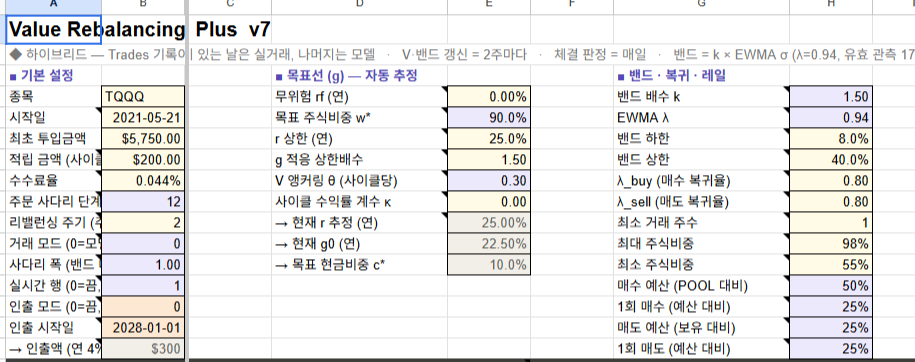
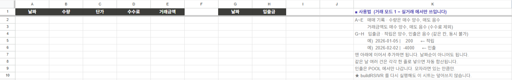
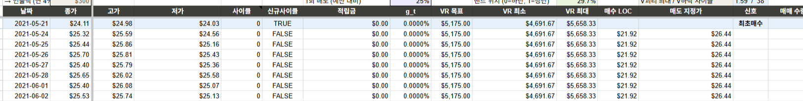
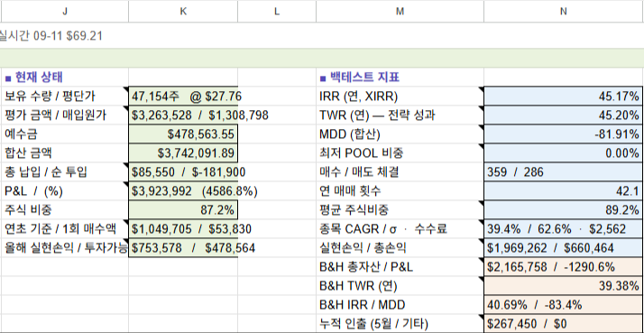

01
Google Sheets
이얀 VR V7 시트 사본 만들기
VR러너는 매수·매도 사다리·자금 상태를 시트에서 읽고 체결 결과를 기록합니다. 배포용 템플릿 시트를 열어 내 계정으로 사본을 만듭니다.
- 템플릿 → 파일 → 사본 만들기
- 사본의 주소창 URL 전체 복사
- 복사본은 모델 모드 — 02장에서 실거래(
1)로 전환. Data 탭은 자동 시세라 그대로
→ 마법사 시트 URL
이얀 VR V7 · 장기투자 리밸런싱
하루 한 번, 시트를 읽어 종가에 리밸런싱하는 장기투자 러너. 아바타와 독립된 별도 트레이(VR.exe)로 실행됩니다.
1‑3·1‑4는 아바타와 절대 같은 값을 쓰면 안 됩니다 — 같은 계좌(앱키)는 기동 시 즉시 차단되고, 같은 봇 토큰은 텔레그램 폴링 충돌(409)을 일으킵니다. 각 카드가 만들어 내는 값이 곧 설정 마법사에 입력할 항목입니다.
VR러너는 매수·매도 사다리·자금 상태를 시트에서 읽고 체결 결과를 기록합니다. 배포용 템플릿 시트를 열어 내 계정으로 사본을 만듭니다.
1)로 전환. Data 탭은 자동 시세라 그대로아바타를 이미 쓰고 있다면 기존 서비스계정을 재사용할 수 있습니다 — 이 VR 시트 사본에 그 이메일을 다시 공유만 하면 됩니다.
client_email 을 시트에 편집자로 공유주문·조회·시세·환전을 키움 REST API로 처리합니다. 아바타와 다른 별도 실전 계좌로 키를 발급받고 실행 PC의 IP를 등록합니다.
실행·체결·환전 알림과 조회/일시정지 명령에 씁니다. 아바타와 다른 새 봇을 만드세요.
/newbot → 봇 토큰getUpdates준비물 01에서 복사한 내 VR 시트 사본을 열어 Tracker 탭 기본 설정을 채우고,
시작일에 최초 투입금액의 80%를 매수해 Trades 탭에 기록하면 시트 준비가 끝납니다.
복사한 시트는 모델 모드(B11=0)로 오니, 실제 운용하려면 아래처럼 실거래 모드(1)로 바꿉니다.
| 셀 | 이름 | 넣을 값 |
|---|---|---|
B4 | 종목 | 운용할 종목 티커 — 예: TQQQ |
B5 | 시작일 | 가능한(최근) 거래일로 설정 — 이 날부터 전략이 시작됩니다 |
B6 | 최초 투입금액 | 처음 넣을 원금(USD) — 예(가상): $5,750. 이 금액이 예수금(POOL)의 시작값이 됩니다 |
B11 | 거래 모드 | 반드시 1(실거래) — 복사 직후엔 0(모델)이라 꼭 바꿉니다 |
B8 수수료율·B9 사다리 단계·B10 리밸런싱 주기·B12 사다리 폭·B13 실시간 행)은 시트 기본값을 그대로 두면 됩니다. 적립·인출(B7)은 다음 장(03 적립·자금)에서 설정합니다. K열 상태·사다리표(P5:W16)는 전부 자동 계산이라 건드리지 않습니다.
B4 종목(TQQQ)·B5 시작일·B6 최초 투입금액($5,750)·B11 거래 모드. 배포 템플릿은 거래 모드가 0(모델)이니 반드시 1(실거래)로 바꿉니다.전략은 시작일에 원금의 80%로 종목을 사서 시작합니다(나머지 20%는 예수금 POOL로 남아 이후 매수·리밸런싱에 쓰입니다). 이 첫 매수만 사람이 직접 하고 Trades 탭에 적어 주면, 이후는 VR러너가 이어받습니다.
B5)에 키움에서 최초 투입금액의 80%만큼 종목을 매수합니다(예: B6=$5,750 → 약 $4,600 매수).A:E 한 줄에 적습니다: 날짜(=시작일) · 수량 · 체결단가 · 수수료 · 거래금액. (같은 날 나눠 샀으면 여러 줄로 적어도 시트가 날짜별로 합산합니다.)K4(보유 수량)·K6(POOL, ≈ 원금의 20%)이 잡히면 시트 준비 완료입니다.
G:H는 적립 입금란. (배포 템플릿 예시)

K4 보유 수량·K6 POOL 이 잡히면 시트 준비 완료입니다.Data 탭은 A1 셀의 GOOGLEFINANCE 수식이 시세 전체를 자동으로 채웁니다.
VR러너는 이 값을 읽기만 하고 절대 쓰지 않으므로, Data 탭은 손대지 말고 그대로 두면 됩니다(예전의 “값 고정 마이그레이션”은 필요 없어졌습니다).
#REF! 로 무너집니다. 시세가 며칠 지연돼 매매 안전장치에서 “가격 지연”으로 걸리면, 시트 메뉴 [VR+] > 가격 새로고침으로 갱신하세요(러너가 대신 쓰지 않습니다).정기 적립을 원하면 Tracker B7에 사이클(2주)당 적립금을 적고, 그 자금을 원화로 증권계좌에 자동이체해 둡니다 — 사이클 시작일마다 VR러너가 알아서 원→달러 환전해 넣습니다.
| 셀 | 이름 | 넣을 값 |
|---|---|---|
B7 | 적립금(사이클당) | 부호가 방향을 정합니다 — 양수: 2주마다 넣을 금액(USD, 예: $100 · $200) / 음수: 그 절대값만큼 자동 인출(달러→원) / 0(빈칸): 환전 안 함 |
B14~B16)과 4주 인출 주기는 시트 개정으로 폐지되었습니다 — 이제 B7 하나의 부호가 적립/인출을 정하고, 인출도 적립과 같은 사이클(2주) 시작일에 처리됩니다(한 사이클에 적립·인출 중 하나만). 켜고 끄는 별도 스위치는 없습니다 — 시트 값(B7)이 곧 자동/수동을 결정합니다.B7은 2주(한 사이클)치 적립금입니다. 사이클 시작일에 환전이 나가려면 그때까지 계좌에 원화가 준비돼 있어야 하므로, 매주 B7의 1/2을 원화로 증권계좌에 자동이체해 두는 것을 권합니다.
B7=$200(2주치) → 매주 $100어치 원화를 증권계좌로 자동이체.B7 음수)은 원화 준비가 필요 없습니다 — 달러 예수금에서 원화로 환전됩니다.B7 적립금(사이클당) — 예시 $200. 인출을 원하면 같은 셀에 음수를 넣습니다(절대값만큼 달러→원 환전).B7과 맞는지 확인하세요.VR 러너는 설치가 필요 없는 단일 실행 파일(VR.exe)입니다. 아바타 트레이(Avatar.exe)와는
완전히 별개 프로그램이라, 같은 PC에 둘 다 설치해도 서로 독립적으로 동작합니다.
VR.exe 를 내려받습니다. 최상단 최신 릴리즈의 첨부 파일을 받으세요.
VR.exe 를 원하는 폴더(예: C:\VR\)에 두고 더블클릭해 실행합니다.^(숨겨진 아이콘 표시)를 확인하세요.VR 트레이 우클릭 → “VR러너 추가…” 를 누르면 내 컴퓨터 안에서만 열리는 설정 페이지가 뜹니다. 아래 값을 입력하세요 — 키·토큰은 붙여넣기 확인을 위해 평문으로 표시됩니다.
| 구역 | 항목 | 입력값 | 출처 |
|---|---|---|---|
| VR러너 | 이름 | 트레이에 표시될 계좌 이름 (예: VR장기) | 자유 |
| 키움 | 앱키 | VR 전용 키움 App Key | 준비물 03 |
| 키움 | 시크릿키 | VR 전용 키움 Secret Key | 준비물 03 |
| 텔레그램 | 봇 토큰 | VR 전용 텔레그램 봇 토큰 | 준비물 04 |
| 텔레그램 | chat_id | 텔레그램 chat_id(숫자) | 준비물 04 |
| 구글 시트 | 시트 URL | 내 VR 시트 사본 주소 | 준비물 01 |
| 구글 시트 | 서비스계정 JSON | 다운로드(또는 재사용)한 JSON 파일 선택 | 준비물 02 |
B4 종목 · J2 검증 띠 · B11 실거래모드=1) · 키움 토큰 발급 · 텔레그램 봇 을 실제로 점검합니다./status 로 확인할 수 있습니다.추가할 때 정한 이름은 나중에 바꿀 수 있습니다 — 표시 이름만 바뀌고 설정·데이터·자동 시작 여부는 그대로입니다.
VR러너는 하루를 세 국면(prep → place → settle)으로 나눠 미국 장을 따라 움직이고, 적립·인출 환전은 이와 별도로 한국시간 기준으로 처리합니다.
| 국면 | 시점 | 하는 일 |
|---|---|---|
| prep | 개장 전 | 시트를 읽어 오늘 사다리(계획)를 확인하고 텔레그램으로 알림 — 시세(Data)는 시트가 자동 유지하므로 러너는 읽기만 함 |
| place | 마감 전(기본 60분 전) | 오늘의 매수·매도 사다리를 종가 지정가(LOC)로 접수 — 안전장치 통과 시에만 |
| settle | 마감 후 | 실제 체결분을 Trades 탭에 자동 기록하고 남은 미체결 정리 |
적립·인출(B7의 부호)은 사이클 시작일 한국시간 오전 10시에 US 장과 별개로 자동 처리됩니다 — B7이 양수면 원→달러 적립, 음수면 그 절대값만큼 달러→원 인출, 0이면 환전 없음. 성공 시 Trades 탭 입금란에 자동 기록됩니다. (설정·자동이체는 03 적립·자금 참고.)
준비물 04에서 등록한 내 대화(chat_id)에서 명령을 보내면 봇이 답합니다 — 먼저 /status 를 보내보세요.
/status 응답 예시(가상)📅 2026-07-31 · ✅ prep · ⏳ place · ⏳ settle · 다음 작업: place ~15:00 ET| 명령어 | 설명 |
|---|---|
/status | 오늘 날짜·국면 진행(prep/place/settle) + 다음 작업 시각 — 실행 확인의 핵심 |
/ladder | 오늘 사다리 표(수량이 있는 단계만) |
/balance | 예수금(USD) · 원화 잔고 |
/help | 전체 명령 목록 보기 |
| 명령어 | 설명 |
|---|---|
/pause | 자동 트레이딩(사다리 접수·적립/인출)을 일시정지 — 봇·리스는 계속 살아있음 |
/resume | 일시정지 해제, 자동 트레이딩 재개 |
주문 접수 직전 시트 검증 · 가격 데이터 신선도 · 시트-실계좌 잔고 정합 · 한도를 자동 점검해, 하나라도 걸리면 그날 주문을 생략하고 텔레그램으로 경고합니다.
_Lock) — VR러너는 실행 중 시트의 _Lock 탭에 “내가 실행 중”이라는 표시(리스)를 주기적으로 남깁니다. 다른 PC의 VR러너가 이 표시를 가져가면 원래 있던 쪽은 자동으로 정지하고 텔레그램으로 알립니다 — 같은 계좌는 같은 PC에서만 실행하세요.VR 트레이는 실행 중인 계좌가 하나라도 있으면 종료되지 않도록 막혀 있습니다.
| 증상 | 확인 · 해결 |
|---|---|
| VR 트레이 아이콘이 안 보임 | 트레이의 ^(숨겨진 아이콘 표시)를 눌러 확인 |
| 실행 시 “PC 보호” 경고 | SmartScreen → 추가 정보 → 실행 |
| “VR러너 추가…” 가 비활성 | 이전 설정 마법사가 아직 열려 있음. 브라우저 탭을 닫고 잠시 뒤 재시도 |
| [입력 확인]에서 “VR 시트 레이아웃” 실패 | Tracker 탭 · B4 종목 · B11=1(실거래모드) · J2 검증 띠 확인 |
| 시세 지연으로 그날 매매가 생략됨 | Data 시세(GOOGLEFINANCE)가 지연된 경우 — 시트 메뉴 [VR+] > 가격 새로고침으로 갱신하세요(러너는 Data 를 쓰지 않습니다) |
| 시트 접근/권한 오류 | 서비스계정 이메일을 이 VR 시트 사본에 편집자로 공유했는지 확인 (준비물 02) |
| 키움 API 호출 거부 | 실행 PC 공인 IP를 키움에 등록했는지 확인 (준비물 03) |
| 텔레그램 알림이 안 옴 | chat_id 가 정확한지, 봇에게 먼저 메시지를 보냈는지 확인 |
| 텔레그램 명령이 뒤섞이거나 무응답 | 봇 토큰이 아바타(또는 다른 VR러너)와 겹치지 않는지 확인(폴링 충돌) |
| “이미 실행 중” 으로 기동 거부 | 같은 키움 계좌(앱키)를 아바타나 다른 VR러너에도 등록했는지 확인 |
| “다른 기기가 리스를 가져감” 알림 후 정지 | 같은 계좌를 여러 PC에서 동시에 실행하지 않았는지 확인 |
| 적립/인출이 실행되지 않음 | B7(양수=적립·음수=인출) 값과, 사이클 시작일의 한국시간 오전 10시 이후 거래일인지 확인 |